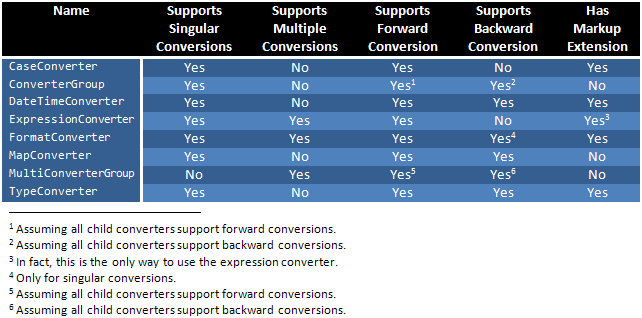

Title: WPF Converters Author: Kent Boogaart Email: kentcb@internode.on.net Member ID: 548409 Language: C# 2.0 Platform: Windows, .NET 3.0 Technology: WPF Level: Intermediate, Advanced Description: An article that provides and describes a set of reusable WPF binding converters. Section WPF SubSection
WPF’s data binding infrastructure is a huge boon to developer productivity. It allows developers to achieve far more with less code. However, most non-trivial applications will require code of some sort. Often this code comes in the form of custom value converters, which – as their name suggests – are used to convert values during the data binding process.
One common mistake WPF novices make when using data binding is to implement custom value converters for each and every binding that requires one. Just like any other code, value converters can be generalized and re-used. This article presents a number of generalized value converters that can be used within your WPF applications.
WPF’s Binding and MultiBinding types define a Converter property that allows you to provide a converter that will be used during the binding process. If you don’t explicitly specify a value converter, WPF will use its built-in primitive ones behind the scenes (such as DefaultValueConverter, ObjectTargetConverter and SystemConvertConverter – all are internal types defined in the MS.Internal.Data namespace).
If you do specify a value converter, WPF will invoke methods on your converter during the data binding process. These methods are:
Convert. Called to convert a value when propagating it from the binding source to the binding target.ConvertBack. Called to convert a value when propagating it from the binding target to the binding source.The following diagram depicts this process:

What I have found whilst working with WPF is that value converters (shown in the middle of the above diagram) are often needed to solve similar problems. This article and code library seeks to address the most common converter requirements and alleviate the need for a lot of custom converter code in any WPF application.
To use the value converters provided in this article, follow these steps:
http://schemas.kent.boogaart.com/converters in your XAML.In all the examples given in this article, the following XML namespace mapping is assumed:
<Window xmlns:con="http://schemas.kent.boogaart.com/converters" ...
Note that the API documentation provides more complete and real-world examples than the short snippets provided in this article. The article is intended to give the general gist of the converters, whilst the API documentation will show you how to use it in earnest.
This table can be used to get a quick overview of the converters provided and their capabilities:

The CaseConverter and CaseConverterExtension classes allow you to convert a string to upper or lower case. They accept a single parameter: Casing, which is used to specify the desired case for the resultant string. It is very simple to use, as the following example demonstrates:
<TextBox x:Name="_textBox"/>
<Label Content="{Binding Text, ElementName=_textBox, Converter={con:CaseConverter Upper}}"/>
<Label Content="{Binding Text, ElementName=_textBox, Converter={con:CaseConverter Lower}}"/>
Anything typed in the TextBox will be displayed in uppercase in the first Label, and lowercase in the second.
The FormatConverter and FormatConverterExtension classes allow you to convert any number of objects to a string by using .NET’s standard formatting capabilities. They accept a single parameter: FormatString, which defines the format for the resultant string.
When binding to a single value it can be used as follows:
<TextBox x:Name="_textBox"/>
<Label Content="{Binding Text, ElementName=_textBox, Converter={con:FormatConverter {}Your name is {0}}}"/>
Note how the format string passed to the FormatConverter is escaped with “{}”, which is necessary because it contains the “{” and “}” characters within it. The format string on its own is simply “Your name is {0}”.
Binding to multiple values looks like this:
<TextBox x:Name="_textBox1"/>
<TextBox x:Name="_textBox2"/>
<Label>
<Label.Content>
<MultiBinding Converter="{con:FormatConverter {}You said {0} and {1}.}">
<Binding Path="Text" ElementName="_textBox1"/>
<Binding Path="Text" ElementName="_textBox2"/>
</MultiBinding>
</Label.Content>
</Label>
The DateTimeConverter and DateTimeConverterExtension classes allow you to perform specialized conversions on DateTimes during data binding. Using these classes, you can do any of the following:
DateTimes (i.e. convert between UTC and local time).DateTimes without changing the underlying DateTime value (i.e. convert by using DateTime.SpecifyKind instead of ToLocalTime or ToUniversalTime).
The DateTimeConverter supports both forward and backwards conversions. This allows you, for example, to store DateTimes in UTC format in your business objects but convert them to local time prior to using them in your interface. The following example shows how you could achieve this (and assumes the existence of a WPF DatePicker class7):
<DatePicker Value="{Binding StartDate, Converter={con:DateTimeConverter TargetKind=Local, SourceKind=Utc}}"/>
The MapConverter class (which has no corresponding markup extension) can be used to map one set of values to another. This is an extremely useful converter that has many use cases. Here are some examples:
bool values and Visibility enumeration values.bool values and an image source so the user sees a tick or a cross depending on the bool value.
The MapConverter works by using a collection of Mapping objects. Each Mapping object specifies a value to map from and a value to map to. The same Mapping objects are used both for forward conversions and backward conversions.
If no relevant Mapping object can be found during a conversion, the MapConverter uses its FallbackBehavior property to decide what to do. You can tell it to either return DependencyProperty.UnsetValue or to return the value it was asked to convert.
An example should make this all clear:
<Label>
<Label.Content>
<Binding Path="Gender">
<Binding.Converter>
<con:MapConverter>
<con:Mapping From="{x:Static Gender.Male}" To="Guy"/>
<con:Mapping From="{x:Static Gender.Female}" To="Gal"/>
</con:MapConverter>
</Binding.Converter>
</Binding>
</Label.Content>
</Label>
This example uses a MapConverter to convert from members in a Gender enumeration to either “Guy” or “Gal”. Now suppose that the Gender enumeration also defines a value of Unknown (a wise move in these modern times). The above mapping won’t successfully convert values of Unknown – it will just return DependencyProperty.UnsetValue instead.
If you want unknown genders to display as “Unknown” you can either add another Mapping or just tell the MapConverter to return the original value if it cannot map the value it is given:
<con:MapConverter FallbackBehavior="ReturnOriginalValue">
<con:Mapping From="{x:Static Gender.Male}" To="Guy"/>
<con:Mapping From="{x:Static Gender.Female}" To="Gal"/>
</con:MapConverter>
A FallbackBehavior of ReturnOriginalValue is extremely useful where you only want to map a subset of the total possible values.
The ExpressionConverter and ExpressionConverterExtension classes allow you to convert one or more bound values by running them through a C#-like expression. The expression uses placeholders of the form {x} to demarcate bound arguments, where x is the argument number starting at zero.
Let’s start with something simple:
<Canvas>
<Slider x:Name="_slider" Width="300" Minimum="1" Maximum="100"/>
<Rectangle Canvas.Top="20" Fill="Red" Width="100" Height="{Binding Value, ElementName=_slider}"/>
<Rectangle Canvas.Top="100" Fill="Blue" Width="100" Height="{Binding Value, ElementName=_slider, Converter={con:ExpressionConverter {}{0} * 2}}"/>
</Canvas>
In this example, the value of the Slider dictates the height of the first rectangle. It also dictates the height of the second rectangle, but an ExpressionConverter is used to double the value first. Notice how the expression passed to the ExpressionConverter is escaped with "{}". As with the FormatConverter, this is necessary because it includes the "{" and "}" characters. The expression on its own is simply "{0} * 2". In English, this means "multiply the first argument by two".
Now, let’s do something a little more complex:
<StackPanel x:Name="_panel">
<Label>What bands do you like?</Label>
<CheckBox x:Name="_rammstein">Rammstein</Label>
<CheckBox x:Name="_powderfinger">Powderfinger</Label>
<CheckBox x:Name="_nickelback">Nickelback</Label>
<CheckBox x:Name="_ministry">Ministry</Label>
<Button Content="Let me in!">
<Button.IsEnabled>
<MultiBinding Converter="{ExpressionConverter {}{0} && {1} && {3} && !{2}}">
<Binding Path="IsChecked" ElementName="_rammstein"/>
<Binding Path="IsChecked" ElementName="_powderfinger"/>
<Binding Path="IsChecked" ElementName="_nickelback"/>
<Binding Path="IsChecked" ElementName="_ministry"/>
</MultiBinding>
</Button.IsEnabled>
</Button>
</StackPanel>
In this example, the entry button is only enabled if the correct combination of bands is chosen. If you don’t like a good band or if you do like a sucky band, you won’t be allowed in.
The actual expression has again been escaped due to its presence in XAML. Unescaped, it is simply "{0} && {1} && {3} && !{2}". An alternative approach that avoids all this escaping is to use a more long-winded syntax in the MultiBinding as follows:
<MultiBinding>
<MultiBinding.Converter>
<con:ExpressionConverterExtension>
<con:ExpressionConverterExtension.Expression>
<![CDATA[
{0} && {1} && {3} && !{2}
]]>
</con:ExpressionConverterExtension.Expression>
</con:ExpressionConverterExtension>
</MultiBinding.Converter>
</MultiBinding>
The ExpressionConverter supports a lot of C# operators and we’ve only scratched the surface of the possibilities here. Please see the API documentation for a full list of supported operators.
I am not going to go into detail here on the implementation of the parser behind the ExpressionConverter. For a good overview on writing a code parser, you should check out Tommy Carlier’s series8 or any good book on compiler construction. However, I would like to point out a few things.
Firstly, I did not leverage .NET’s C# CodeDom implementation to parse the expressions. This was due to the imposed security restrictions. I want the ExpressionConverter to be usable in low trust applications (including Silverlight).
Secondly, I did not leverage ANTLR to generate the parser because then my library would have a dependency of the .NET ANTLR runtime. This was not an option as I was trying to keep the overhead of my library to a minimum.
Of course, I did experiment with both CodeDom and ANTLR prior to implementing the parser. This gave me some insights and helped me formulate goals for the parser. Some things that are not supported by my implementation are:
@).\n and \t are supported).These features were left out consciously: either because of space constraints, concerns about abuse, or concerns about the efficiency of an interpretive implementation. If you feel there is good reason to include some of these features then please let me know. If you make a strong case I may well add your feature of choice.
Finally, as I hinted at above, the current implementation of the parser functions as an interpreter. It does not yet leverage .NET’s DynamicMethod class to produce compiled output, but it may in the future . Note that expressions given to the ExpressionConverter are parsed only once. After being parsed, the same abstract syntax tree (AST) is used to evaluate the expression any number of times. Having said that, evaluation of the expressions will be slower than an otherwise equivalent implementation based on DynamicMethod. If this proves to be a problem in the real world then I may change the implementation.
The Binding class only allows you to provide one converter. The ConverterGroup class allows you to construct a pipeline of converters that can be assigned to a Binding, which essentially annuls this restriction. Here’s an example:
<TextBox x:Name="_textBox"/>
<Label>
<Label.Content>
<Binding Path="Text" ElementName="_textBox">
<Binding.Converter>
<con:ConverterGroup>
<con:CaseConverter Casing="Upper"/>
<con:FormatConverter FormatString="In uppercase, you entered ‘{0}’."/>
</con:ConverterGroup>
</Binding.Converter>
</Binding>
</Label.Content>
</Label>
In this example, any input in the TextBox is first converted to uppercase with the CaseConverter and then formatted via the FormatConverter. If all converters in the pipeline support backward conversions (not so in this case) then the ConverterGroup will also support backwards conversions.
The MultiConverterGroup class has the same goals as the ConverterGroup class except that it is an implementation of IMultiValueConverter rather than IValueConverter. It works with a pipeline of steps (represented by instances of MultiConverterGroupStep). Each step can have any number of multi-value converters in it. The output from each step is the combined output from each converter in the step. This output is then fed into the next step.
If your head hurts from reading that (mine sure does after writing it) then perhaps this diagram will help:

The above example defines three steps in the conversion pipeline. The MultiConverterGroup combines objects output from the converters in Step 1 and uses that as the input to Step 2. Similarly, the output from Step 2 is fed into Step 3. The XAML for this example would look like this:
<con:MultiConverterGroup>
<MultiConverterGroupStep>
<Converter1/>
<Converter2/>
<Converter3/>
</MultiConverterGroupStep>
<MultiConverterGroupStep>
<Converter4/>
<Converter5/>
<Converter6/>
</MultiConverterGroupStep>
<MultiConverterGroupStep>
<Converter7/>
</MultiConverterGroupStep>
</con:MultiConverterGroup>
Note that the last step must always have exactly one converter, which makes sense because at the end of the day the pipeline needs to produce a single value. If you violate this constraint, you’ll get an exception.
So that covers forward conversions, but what about backward conversions? If you examine the diagram, you’ll realize that a backward conversion starts at the bottom and heads toward the top, but could take one of many paths. In theory, if all converters are implemented correctly and they all support backward conversions, then any path from the bottom to the top with the same input would yield the same output.
The MultiConverterGroup solves this ambiguity by leaning on the left-hand side of the path when converting backwards. In the example, it will pass output from Converter7 into Converter4 and then pass the output from that into Converter1.
The TypeConverter and TypeConverterExtension classes provide the ability to convert input values to different types. It is essentially a public implementation of the internal DefaultValueConverter and SystemConvertConverter BCL types. It is useful in coercing a value to required type during a pipeline conversion using ConverterGroup. Using it is straightforward:
<Label>
<Label.Content>
<Binding Path="Dob">
<Binding.Converter>
<con:ConverterGroup>
<con:TypeConverter TargetType="{x:Type sys:DateTime}"/>
<con:DateTimeConverter TargetKind="Local"/>
</con:ConverterGroup>
</Binding.Converter>
</Binding>
</Label.Content>
</Label>
In this highly fabricated example, there is a Dob property that is a string when it really should be a DateTime. A TypeConverter is used to convert the string to a DateTime prior to feeding it into a DateTimeConverter.
The TypeConverter will first attempt to convert data by way of an IConvertible implementation. If the value does not implement IConvertible then an attempt will be made to use any System.ComponentModel.TypeConverter implementation type for the class. If all attempts to convert the value fail, DependencyProperty.UnsetValue will be returned.
The observant among you may have noticed that my converter implementations inherit from DependencyObject and define their properties as DependencyPropertys. You may see this and try something like:
<Label>
<Label.Content>
<Binding Path="Name">
<Binding.Converter>
<con:CaseConverter Casing="{Binding Casing}"/>
</Binding.Converter>
</Binding>
</Label.Content>
</Label>
Alas, this won’t work, at least with the current version of WPF. You’ll get an error:
Cannot find governing FrameworkElement or FrameworkContentElement for target element. BindingExpression:Path=Casing; DataItem=null; target element is 'CaseConverter'
So why did I bother with DependencyObjects? Well, if you really need to bind properties on your converters you can use Josh Smith’s virtual branch technique9 to do so.
If you do any work in WPF you will get value out of the converters presented in this article. For more examples and information on any of the converters, please download the source and API documentation. Finally, any feedback you can give me on the library will help to improve it over time.
7 See my blog post for help on using Kevin Moore’s DatePicker control: http://kentb.blogspot.com/2007/07/wpf-and-date-entry.html
8 See http://tommycarlier.blogspot.com/2007/05/writing-parser-overview.html.
9 See http://www.codeproject.com/WPF/AttachingVirtualBranches.asp.